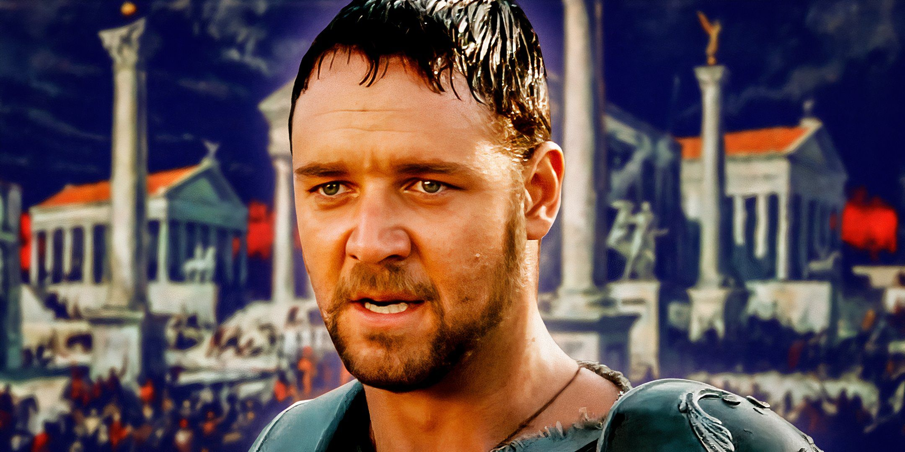
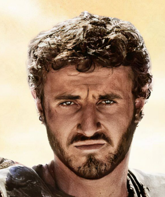

Maximus Decimus Meridius (1 ?? -192 ap. J.-C.) était le commandant des armées du Nord et des légions Félix sous l’Empire romain.Le plus grand général de Rome au IIe siècle après J.-C., il servit loyalement sous l’empereur Marc Aurèle lors de sa campagne de douze ans contre les tribus germaniques à Vindobona en Germanie. Marcus Aurelius voulait qu’il lui succède et fasse de Rome une république – mais son fils ambitieux Commodus ordonna à la Garde prétorienne de tuer Maximus et sa famille après que ce dernier eut refusé de lui prêter allégeance. Maximus s’échappa, mais fut ensuite réduit en esclavage et devint un gladiateur très célèbre. Durant son temps de gladiateur, il remporte plusieurs titres, dont L’Espagnol, Élie Maximus et Maxime le Miséricordieux. En 192, il eut enfin l’occasion de venger son empereur défunt ainsi que sa femme et son fils, et il tua Commode, bien qu’il soit mort de ses blessures. Il a été interprété par Russell Crowe dans le film Gladiator de 2000

Lucius Verus II, également connu sous le nom de Hanno, et Lucius Verus Aurelius, étaient supposés être le fils de l’impératrice romaine Lucilla et de Lucius Verus, qui est décédé. Il fut co-dirigeant sous le règne de son oncle, l’empereur romain Commode. Il est ensuite révélé qu’il est en réalité le fils de Maximus Decimus Meridius. [1] Il a été interprété par Spencer Treat Clark dans le film Gladiator de 2000, et par Paul Mescal dans sa suite Gladiator II, et par Alfie Tempest en jeune Lucius dans des flashbacks.